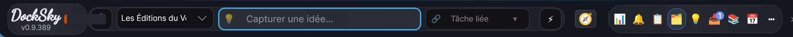
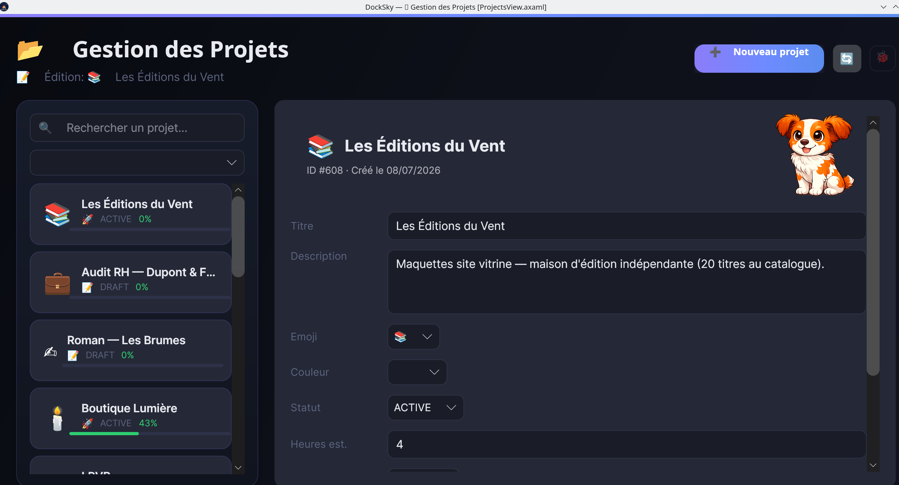
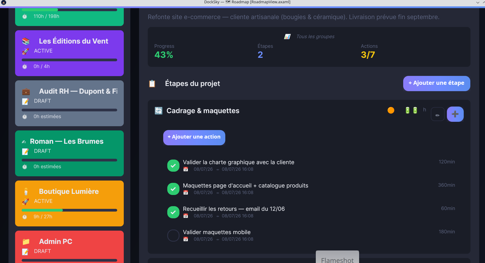
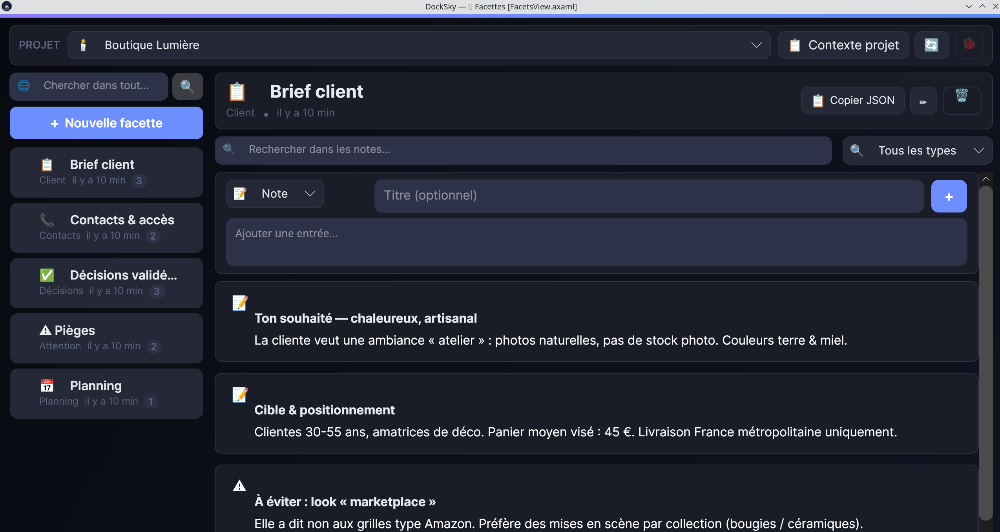
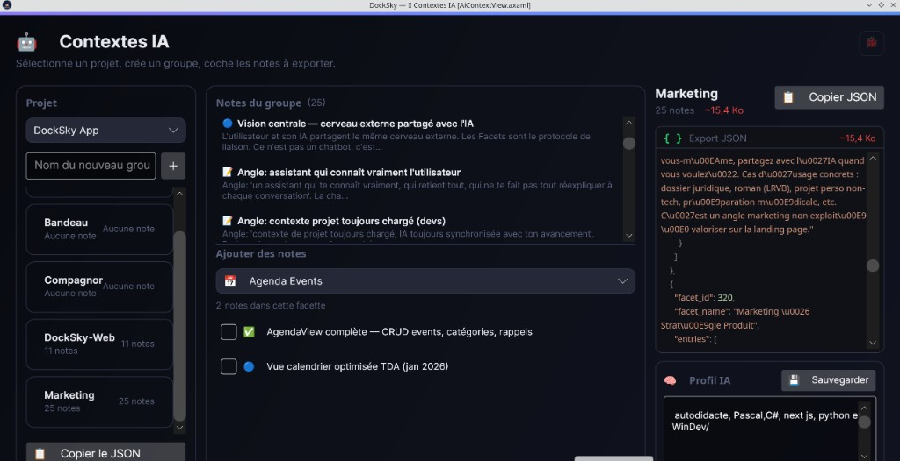
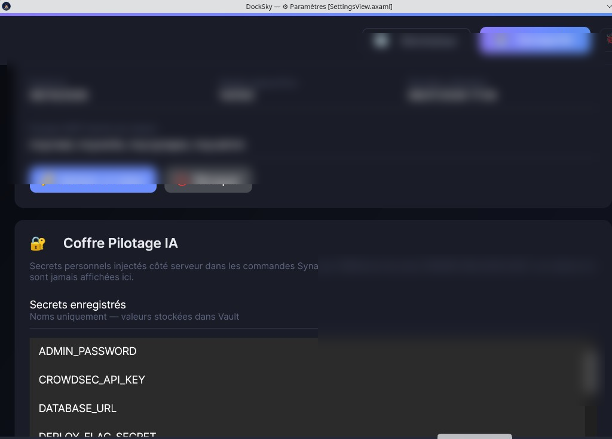

Mémoire de projet persistante pour freelances, créatifs et travailleurs solo
docksky.fr



Stack, conventions, bugs connus, décisions d'archi — ton IA les connaît avant la première ligne de code.
À chaque session Cursor, Claude ou Copilot, tu réexpliques ton repo, tes patterns, ce qui a planté la dernière fois. 5 à 10 minutes perdues avant de vraiment coder.
| Contexte IA | Stack, conventions, règles de collaboration |
|---|---|
| Décisions archi | Pourquoi ce choix plutôt qu'un autre |
| Bugs & solutions | Ce qui a cassé, comment c'était résolu |
| Accès & config | Ports, variables, commandes utiles |
Zéro réexplication.
api.docksky.fr/tda/mcp{{DB_PASS}}…)synapse_exec via MCP — secrets injectés côté serveur

Desktop : Avalonia / .NET 8 — Linux, Windows · macOS bientôt
API : FastAPI / Python — api.docksky.fr
docksky.fr/telecharger